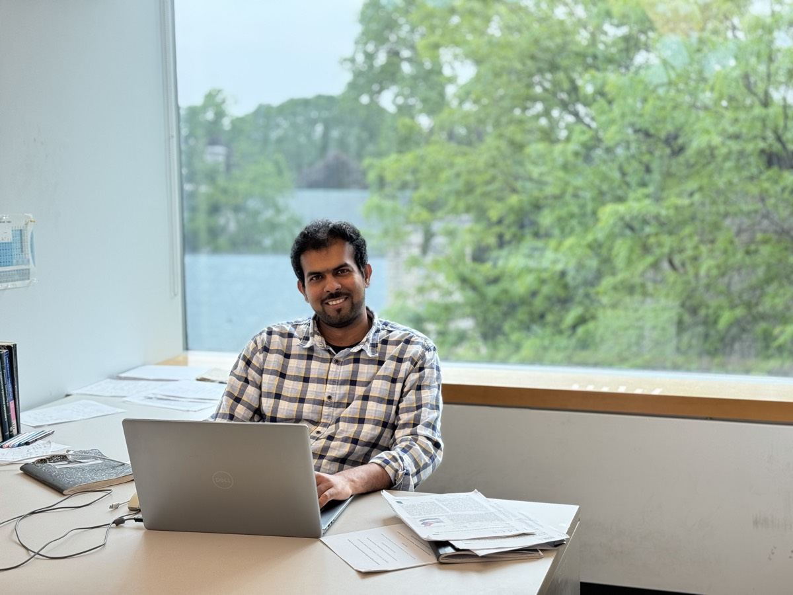

THEORETICAL & COMPUTATIONAL CHEMIST
As a physical chemist, my research is rooted in theoretical and quantum chemistry, with a strong focus on developing new theoretical frameworks, computational methodologies, and efficient algorithms to address pressing challenges in chemistry, material science and nanoscience. In the spirit of the uncertainty principle, I am currently located at Northwestern University, with research momentum extending globally.
